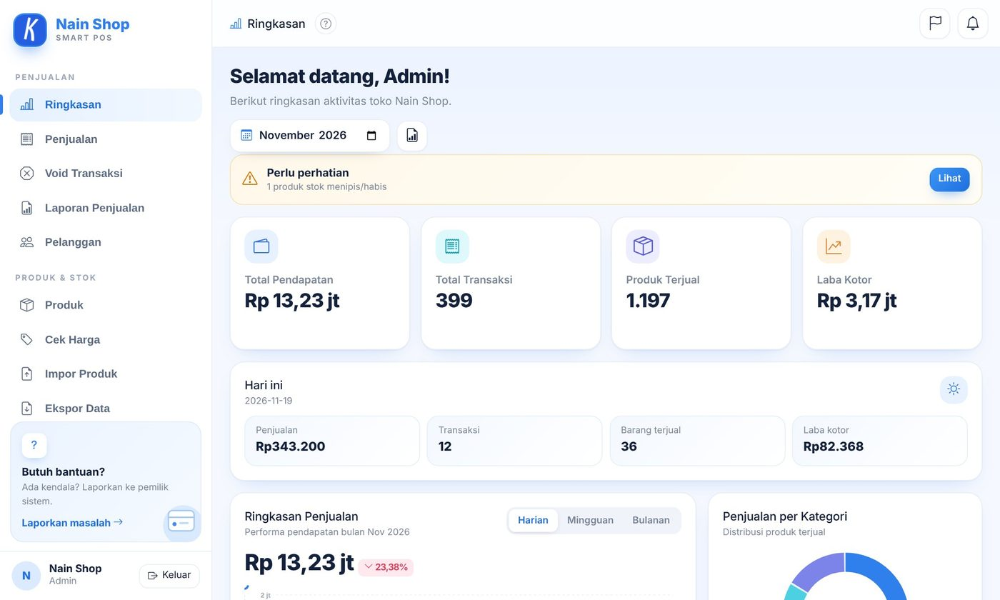

Frontend
Halaman responsif, animasi halus, dan aplikasi yang bisa dipasang seperti aplikasi biasa.
- HTML
- CSS
- JavaScript
- PWA
- Bootstrap
Web developer dan content creator dari Indonesia. Dari aplikasi kasir sampai platform sejarah Cirebon, semuanya saya bangun sendiri, mulai dari desain sampai rilis.

Saya Nain Nadika, web developer sekaligus content creator. Saya mengelola Nawaku (nainpedia.com), platform baca digital yang mendokumentasikan sejarah, budaya, dan kuliner Kota Cirebon, dan membangun produk web saya sendiri mulai dari aplikasi kasir sampai sistem sekolah.
Saya suka mengerjakan semuanya dari awal: memahami masalahnya, merancang tampilan yang bersih, menulis kodenya, lalu merilisnya. Hasilnya ringan, mudah dipakai, dan tetap enak dilihat.
Satu orang memegang seluruh alur: desain antarmuka, logika aplikasi, penyimpanan data, dan konten.
Halaman responsif, animasi halus, dan aplikasi yang bisa dipasang seperti aplikasi biasa.
Login, database realtime, dan penyimpanan tanpa server yang rumit.
Bahasa desain biru yang konsisten: kaca buram, ikon SVG, dan tipografi yang bersih.
Artikel sejarah dan budaya yang disusun per kawasan agar mudah ditelusuri.
Pilih kategori, lalu buka detailnya untuk melihat fitur dan teknologi yang dipakai.
Mulai dari siapa penggunanya dan apa yang membuat mereka repot hari ini.
Susun alur dan tampilan yang bersih, konsisten, dan nyaman di HP maupun komputer.
Tulis kode yang ringan, lalu uji alurnya sampai hal kecil seperti kondisi offline.
Rilis ke pengguna, kumpulkan masukan, lalu perbaiki dan tambah fitur bertahap.
Ceritakan singkat kebutuhanmu. Saya balas secepatnya, dan kita bahas arah, waktu, dan biayanya bersama.